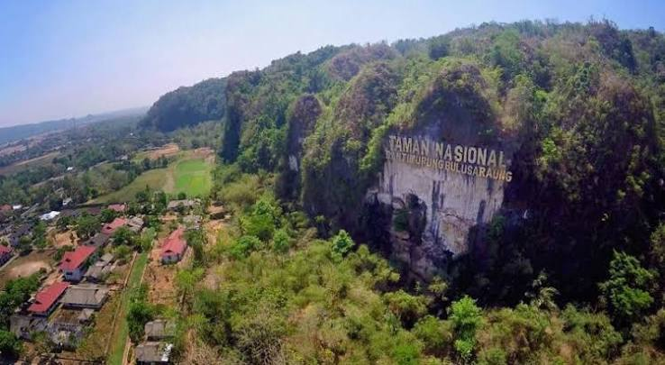

Potret Keindahan




The Kingdom of Butterfly di Sulawesi Selatan
Taman Nasional Bantimurung-Bulusaraung adalah primadona wisata alam di Kabupaten Maros, Sulawesi Selatan. Tempat ini sangat ikonik dengan julukan "The Kingdom of Butterfly" yang dulu diberikan oleh Alfred Russel Wallace karena keanekaragaman spesies kupu-kupu di kawasan ini. Selain kupu-kupu, pengunjung juga selalu memadati area air terjun Bantimurung yang airnya segar karena mengalir langsung dari pegunungan karst, serta menjelajahi gua-gua prasejarah yang ada di sekitarnya.

Alamat: Jl. Poros Maros-Bone Km. 12, Kalabbirang, Bantimurung, Kabupaten Maros, Sulawesi Selatan.
Peta Lokasi:
Detail jam operasional dan harga tiket masuk:
| Hari | Jam Buka | Harga Tiket (Domestik) |
|---|---|---|
| Senin - Jumat | 08:00 - 16:00 WITA | Rp 25.000 |
| Sabtu - Minggu / Libur | 07:30 - 17:00 WITA | Rp 30.000 |